6 The Haunted DAG & the Causal Terror
Preface
合流点を固定してしまうと、あるいは合流点の値で選抜を行ってしまうと、疑相関が生じてしまう。
例えば、交付金申請に通った研究内のみで「研究の信頼性」と「研究の話題性」の相関を調べる場合。
本来それらには相関がなくても、申請に通った研究（両者の合計点が高い研究）のみに絞ると、負の相関が生じる。
theme_set(theme_classic())
set.seed(200)
n <- 500 # number of proposal
p <- 0.1 # prop to select
d <- tibble(newsworthiness = rnorm(n),
trustworthiness = rnorm(n))
d %>%
ggplot(aes(x=newsworthiness,y=trustworthiness))+
geom_point()+
theme(aspect.ratio=1)+
geom_smooth(method = "lm", color = "black")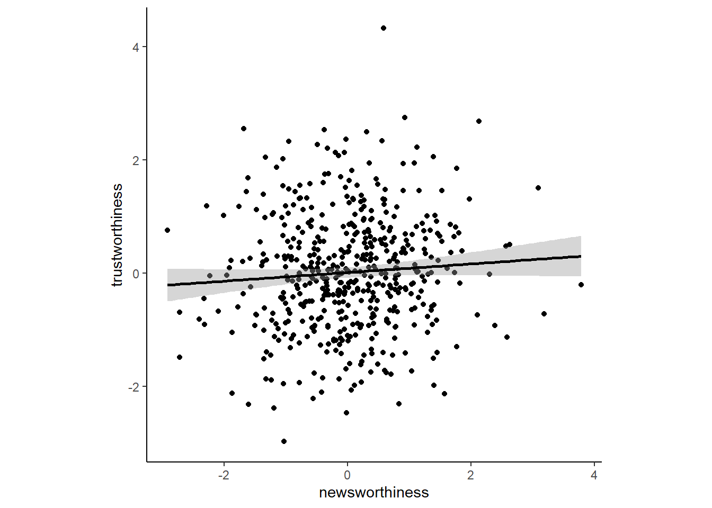
合計点が上位10%のみの研究に絞ると…。
d %>%
mutate(total = trustworthiness + newsworthiness) %>%
mutate(selected = ifelse(total >= quantile(total, 1-p), TRUE, FALSE)) -> d
head(d)## # A tibble: 6 × 4
## newsworthiness trustworthiness total selected
## <dbl> <dbl> <dbl> <lgl>
## 1 0.0848 -0.354 -0.269 FALSE
## 2 0.226 -1.93 -1.70 FALSE
## 3 0.433 -0.761 -0.328 FALSE
## 4 0.558 2.34 2.90 TRUE
## 5 0.0598 -2.07 -2.01 FALSE
## 6 -0.115 -1.04 -1.15 FALSEtext <-
tibble(newsworthiness = c(2, 1),
trustworthiness = c(2.25, -2.5),
selected = c(TRUE, FALSE),
label = c("selected", "rejected"))
d %>%
ggplot(aes(x = newsworthiness, y=trustworthiness,
color = selected))+
geom_point(aes(shape = selected), alpha =3/4)+
geom_text(data = text,
aes(label = label))+
scale_shape_manual(values=c(1,19))+
scale_color_manual(values=c("black", "navyblue"))+
geom_smooth(data = . %>% filter(selected == "TRUE"),
method = "lm", color = "navyblue",
se = F, size = 1/2, fullrange = T)+
theme(legend.position = "none",
aspect.ratio=1)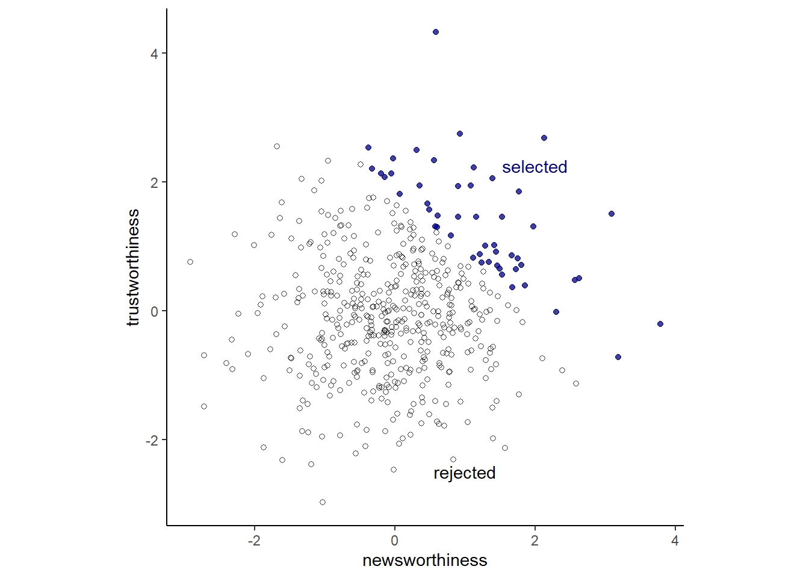
本章では、回帰モデルを使用する際にどの変数を加えるべきで、どの変数を加えるべきでないかを検討する。
6.1 Multicollinearity
両脚の長さから身長を予測するモデルを考える。
set.seed(909)
n <- 100
d <- tibble(height = rnorm(n, 10, 2),
leg_prop = runif(n, 0.4, 0.5)) %>%
mutate(leg_left = leg_prop*height +
rnorm(n,0,0.02),
leg_right = leg_prop*height +
rnorm(n, 0, 0.02))当然、左右の脚の長さ同士は強く相関するし、どちらも身長と強く相関する。
d %>%
dplyr::select(-leg_prop) %>%
cor()## height leg_left leg_right
## height 1.0000000 0.9557084 0.9559273
## leg_left 0.9557084 1.0000000 0.9997458
## leg_right 0.9559273 0.9997458 1.0000000d %>%
ggplot(aes(x=leg_left, y=leg_right))+
geom_point()+
theme(aspect.ratio=1)-> p1
d %>%
ggplot(aes(x=leg_left, y=height))+
geom_point()+
theme(aspect.ratio=1) -> p2
d %>%
ggplot(aes(x=leg_right, y=height))+
geom_point()+
theme(aspect.ratio=1) -> p3
p1+p2+p3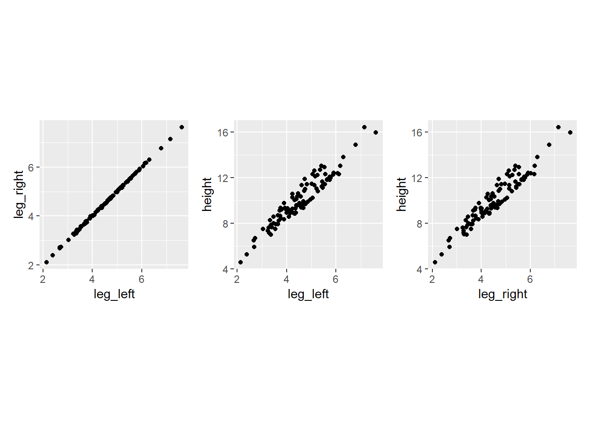
そこで、モデルを回してみると…。
どちらも身長にほとんど影響していないように見えるし、両脚が異なる影響を与えているような推定結果になってしまう。
b6.1 <-
brm(data = d,
family = gaussian,
formula = height ~ 1 + leg_left + leg_right,
prior = c(prior(normal(10,100),class=Intercept),
prior(normal(2,10),class=b),
prior(exponential(1),class = sigma)),
iter=2000,warmup=1000,chains=4,
backend = "cmdstanr",
file = "output/Chapter6/b6.1")
posterior_summary(b6.1) %>%
round(2) %>%
data.frame() %>%
rownames_to_column(var = "parameter") %>%
as_tibble()## # A tibble: 6 × 5
## parameter Estimate Est.Error Q2.5 Q97.5
## <chr> <dbl> <dbl> <dbl> <dbl>
## 1 b_Intercept 0.98 0.29 0.4 1.56
## 2 b_leg_left 0.17 2.59 -4.94 5.17
## 3 b_leg_right 1.83 2.59 -3.17 6.96
## 4 sigma 0.63 0.05 0.55 0.73
## 5 lprior -12.7 0.12 -13.0 -12.6
## 6 lp__ -109. 1.48 -113. -107.posterior_samples(b6.1) %>%
dplyr::select(-lp__) %>%
mcmc_intervals()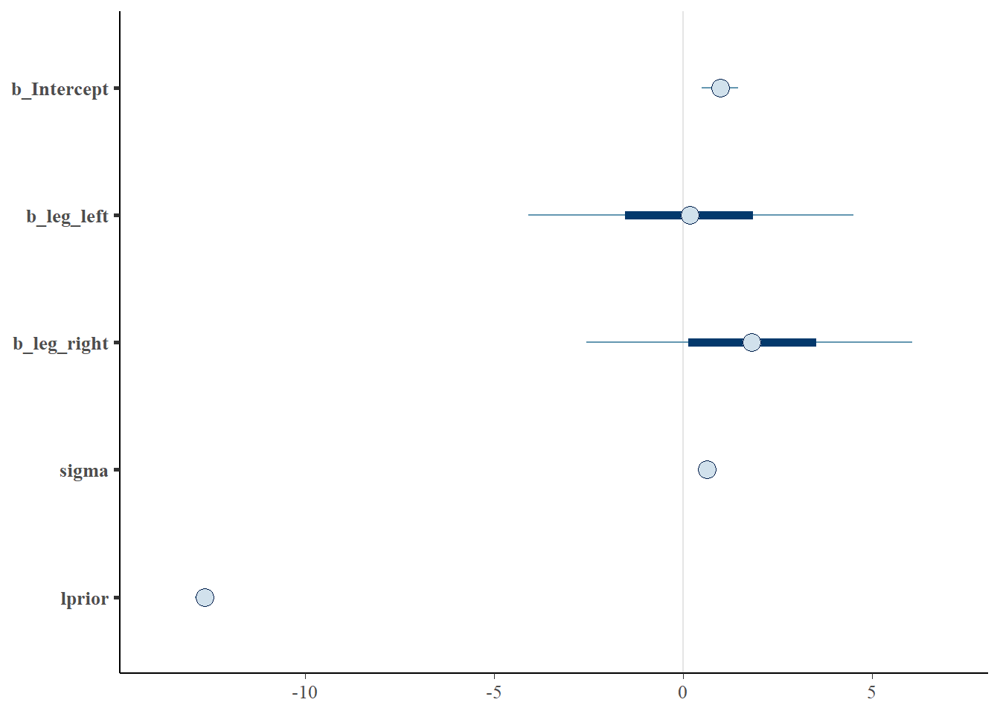
繰り返しやってみる。 推定結果にかなりばらつきが出る。
sim_and_fit <- function(seed, n = 100) {
n <- n
set.seed(seed)
d <-
tibble(height = rnorm(n, mean = 10, sd = 2),
leg_prop = runif(n, min = 0.4, max = 0.5)) %>%
mutate(leg_left = leg_prop * height + rnorm(n, mean = 0, sd = 0.02),
leg_right = leg_prop * height + rnorm(n, mean = 0, sd = 0.02))
fit <- update(b6.1, newdata = d)
}
#sim <-
# tibble(seed = 1:4) %>%
#mutate(post = purrr::map(seed, ~sim_and_fit(.) %>%
# posterior_samples()))
sim <- readRDS("output/Chapter6/sim.rds")
sim %>%
unnest(post) %>%
pivot_longer(b_Intercept:sigma) %>%
mutate(seed = str_c("seed ", seed)) %>%
ggplot(aes(x = value, y = name)) +
stat_pointinterval(.width = .95, color = "forestgreen") +
labs(x = "posterior", y = NULL) +
theme(axis.text.y = element_text(hjust = 0),
panel.border = element_rect(color = "black", fill = "transparent"),
panel.grid.minor = element_blank(),
strip.text = element_text(hjust = 0)) +
facet_wrap(~ seed, ncol = 1)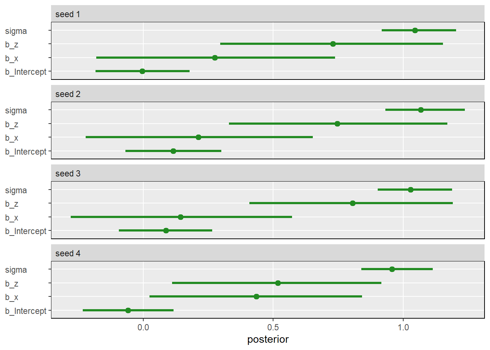
両脚の係数は強く相関する。
posterior_samples(b6.1) %>%
dplyr::select(b_leg_right,b_leg_left) %>%
ggplot(aes(x=b_leg_right,y=b_leg_left))+
geom_point()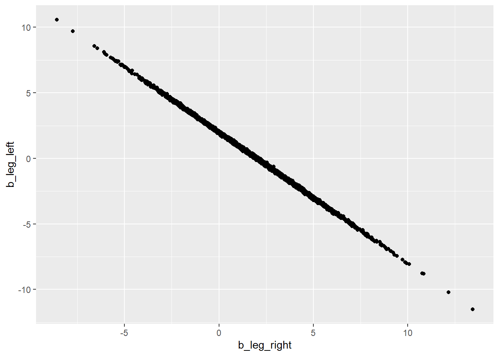
また、両者の合計はおおよそどちらか一つの変数のみを説明変数に入れたときの係数(2程度)と一致する。
posterior_samples(b6.1) %>%
mutate(sum_b = b_leg_left+b_leg_right) %>%
dplyr::select(sum_b) %>%
ggplot(aes(x=sum_b))+
geom_histogram()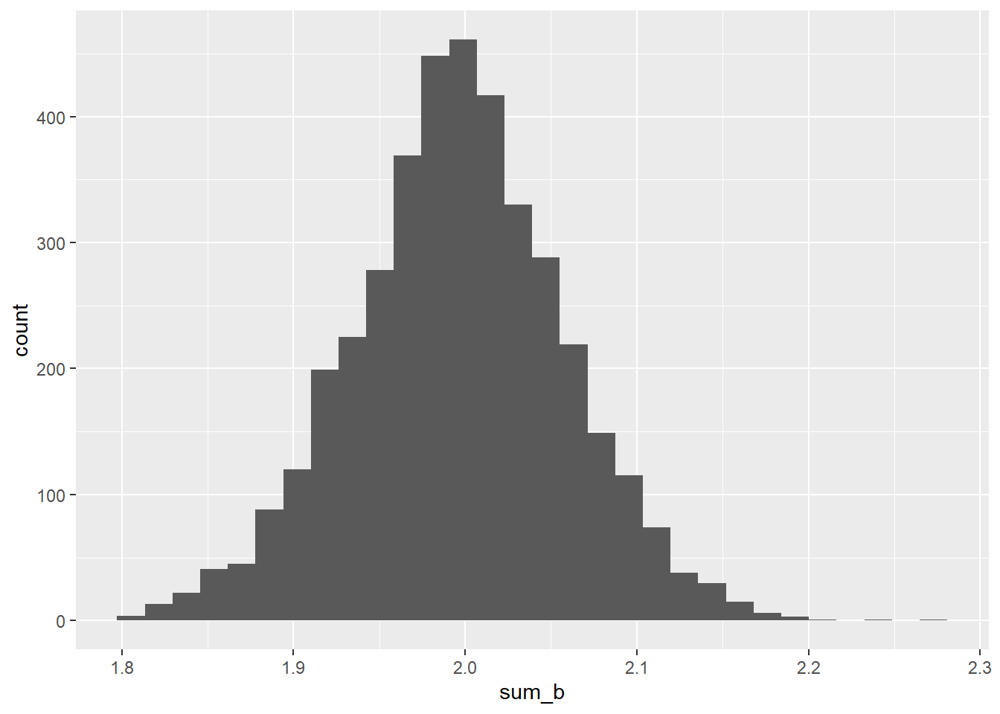
これは、左右の脚の長さが強く相関しているため、モデルが以下の式のように近似できると考えると上手く説明できる。
$ \[\begin{aligned} y_{i} &\sim Normal(\mu_{i}, \sigma)\\ \mu_{i} &= \alpha + (\beta_{1} + \beta_{2})x_{i} \end{aligned}\]$
b6.1_2 <-
brm(data = d,
family = gaussian,
formula = height ~ 1 + leg_right,
prior = c(prior(normal(10,100),class=Intercept),
prior(normal(2,10),class=b),
prior(exponential(1),class = sigma)),
iter=2000,warmup=1000,chains=4,
backend = "cmdstanr",
file = "output/Chapter6/b6.1_2")
posterior_summary(b6.1_2) %>%
round(2) %>%
data.frame() %>%
rownames_to_column(var = "parameter") %>%
as_tibble()## # A tibble: 5 × 5
## parameter Estimate Est.Error Q2.5 Q97.5
## <chr> <dbl> <dbl> <dbl> <dbl>
## 1 b_Intercept 0.98 0.29 0.4 1.56
## 2 b_leg_right 2 0.06 1.87 2.12
## 3 sigma 0.63 0.05 0.55 0.72
## 4 lprior -9.38 0.05 -9.47 -9.3
## 5 lp__ -105. 1.24 -108. -104.6.1.1 Multicollinear milk
霊長類の母乳のデータを用いて考える。
脂肪分の割合（F）とラクトースの割合（L）でカロリー（K）を予測することを考える。
FとLは強く負に相関する。
data(milk)
d2 <- milk %>%
mutate(K = standardize(kcal.per.g),
F = standardize(perc.fat),
L = standardize(perc.lactose))
head(d2)## clade species kcal.per.g perc.fat perc.protein
## 1 Strepsirrhine Eulemur fulvus 0.49 16.60 15.42
## 2 Strepsirrhine E macaco 0.51 19.27 16.91
## 3 Strepsirrhine E mongoz 0.46 14.11 16.85
## 4 Strepsirrhine E rubriventer 0.48 14.91 13.18
## 5 Strepsirrhine Lemur catta 0.60 27.28 19.50
## 6 New World Monkey Alouatta seniculus 0.47 21.22 23.58
## perc.lactose mass neocortex.perc K F L
## 1 67.98 1.95 55.16 -0.9400408 -1.2172427 1.3072619
## 2 63.82 2.09 NA -0.8161263 -1.0303552 1.0112855
## 3 69.04 2.51 NA -1.1259125 -1.3915310 1.3826790
## 4 71.91 1.62 NA -1.0019980 -1.3355347 1.5868743
## 5 53.22 2.19 NA -0.2585112 -0.4696927 0.2571148
## 6 55.20 5.25 64.54 -1.0639553 -0.8938643 0.3979882d2 %>%
dplyr::select(F,K,L) %>%
pairs()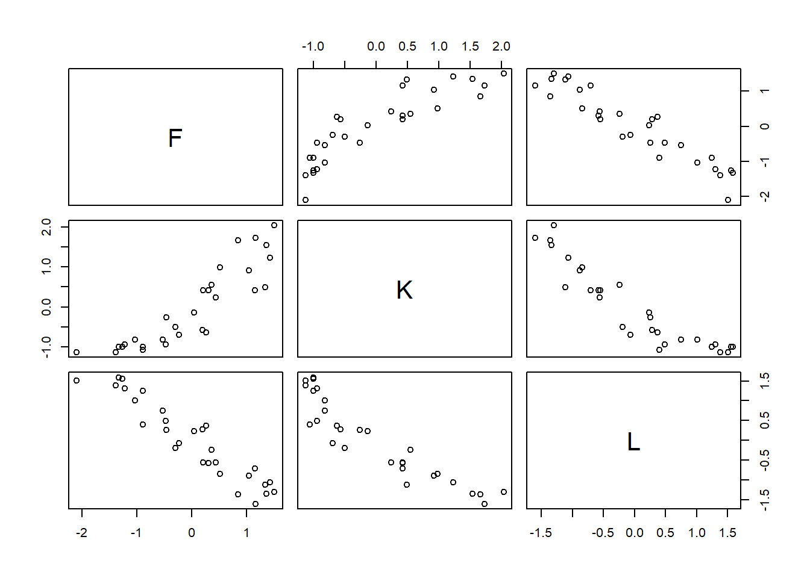
library(GGally)
ggpairs(data = d2, columns = 9:11)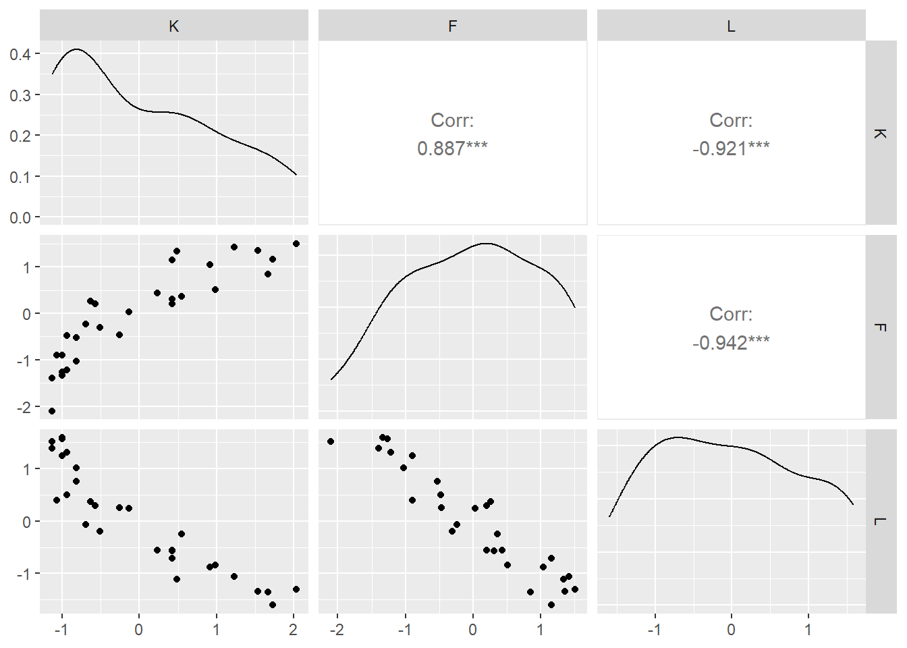
それぞれの変数でモデリングしてみる。
b6.2_F <-
brm(data = d2,
family = gaussian,
formula = K ~ 1 + F,
prior = c(prior(normal(0,0.2),class=Intercept),
prior(normal(0,0.5),class=b),
prior(exponential(1),class=sigma)),
iter=4000, warmup = 3000, chains=4,
backend = "cmdstanr",
file = "output/Chapter6/b6.2_F")
b6.2_L <-
brm(data = d2,
family = gaussian,
formula = K ~ 1 + L,
prior = c(prior(normal(0,0.2),class=Intercept),
prior(normal(0,0.5),class=b),
prior(exponential(1),class=sigma)),
iter=4000, warmup = 3000, chains=4,
backend = "cmdstanr",
file = "output/Chapter6/b6.2_L")
posterior_summary(b6.2_F) %>%
round(2) %>%
data.frame() %>%
rownames_to_column(var = "parameter") %>%
as_tibble()## # A tibble: 5 × 5
## parameter Estimate Est.Error Q2.5 Q97.5
## <chr> <dbl> <dbl> <dbl> <dbl>
## 1 b_Intercept 0 0.08 -0.17 0.15
## 2 b_F 0.86 0.1 0.66 1.04
## 3 sigma 0.49 0.07 0.38 0.65
## 4 lprior -1.6 0.36 -2.37 -0.98
## 5 lp__ -22.1 1.3 -25.5 -20.6posterior_summary(b6.2_L) %>%
round(2) %>%
data.frame() %>%
rownames_to_column(var = "parameter") %>%
as_tibble()## # A tibble: 5 × 5
## parameter Estimate Est.Error Q2.5 Q97.5
## <chr> <dbl> <dbl> <dbl> <dbl>
## 1 b_Intercept 0 0.07 -0.14 0.14
## 2 b_L -0.9 0.08 -1.05 -0.74
## 3 sigma 0.41 0.06 0.32 0.55
## 4 lprior -1.63 0.3 -2.29 -1.12
## 5 lp__ -17.4 1.3 -20.8 -15.9次に、両方の変数を説明変数に入れてモデリング。係数が変化しており、ばらつきも大きくなっている。
b6.2_LF <-
brm(data = d2,
family = gaussian,
formula = K ~ 1 + L + F,
prior = c(prior(normal(0,0.2),class=Intercept),
prior(normal(0,0.5),class=b),
prior(exponential(1),class=sigma)),
iter=4000, warmup = 3000, chains=4,
backend = "cmdstanr",
file = "output/Chapter6/b6.2_LF")
posterior_summary(b6.2_LF) %>%
round(2) %>%
data.frame() %>%
rownames_to_column(var = "parameter") %>%
as_tibble()## # A tibble: 6 × 5
## parameter Estimate Est.Error Q2.5 Q97.5
## <chr> <dbl> <dbl> <dbl> <dbl>
## 1 b_Intercept 0 0.07 -0.14 0.14
## 2 b_L -0.67 0.2 -1.06 -0.25
## 3 b_F 0.25 0.19 -0.14 0.64
## 4 sigma 0.42 0.06 0.32 0.54
## 5 lprior -1.42 0.43 -2.56 -0.87
## 6 lp__ -17.3 1.44 -20.9 -15.4posterior_summary(b6.2_LF) %>%
round(2) %>%
data.frame() %>%
rownames_to_column(var = "parameter") %>%
as_tibble()## # A tibble: 6 × 5
## parameter Estimate Est.Error Q2.5 Q97.5
## <chr> <dbl> <dbl> <dbl> <dbl>
## 1 b_Intercept 0 0.07 -0.14 0.14
## 2 b_L -0.67 0.2 -1.06 -0.25
## 3 b_F 0.25 0.19 -0.14 0.64
## 4 sigma 0.42 0.06 0.32 0.54
## 5 lprior -1.42 0.43 -2.56 -0.87
## 6 lp__ -17.3 1.44 -20.9 -15.4およらく、データには以下のような因果関係がある。
library(ggdag)
dag_coords <-
tibble(name = c("L", "D", "F", "K"),
x = c(1, 2, 3, 2),
y = c(2, 2, 2, 1))
dagify(L ~ D,
F ~ D,
K ~ L + F,
coords = dag_coords) %>%
ggplot(aes(x = x, y = y, xend = xend, yend = yend)) +
geom_dag_point(aes(color = name == "D"),
alpha = 1/2, size = 6.5, show.legend = F) +
geom_point(x = 2, y = 2,
size = 6.5, shape = 1, stroke = 1, color = "orange") +
geom_dag_text(color = "black") +
geom_dag_edges() +
scale_color_manual(values = c("steelblue", "orange")) +
scale_x_continuous(NULL, breaks = NULL, expand = c(.1, .1)) +
scale_y_continuous(NULL, breaks = NULL, expand = c(.1, .1))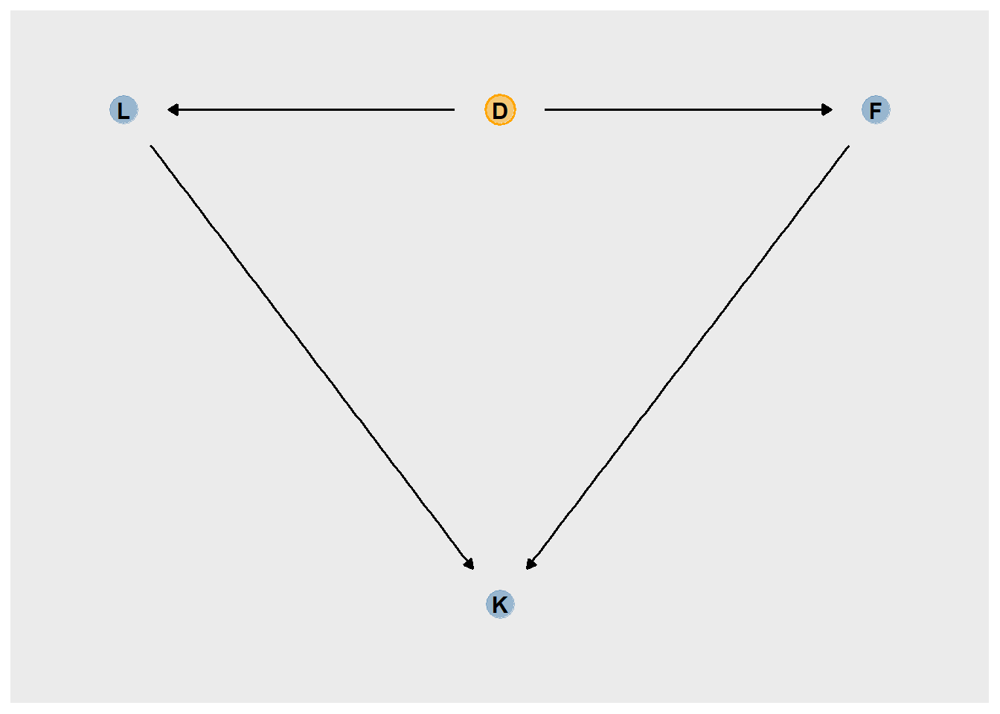
6.2 Post-treatment bias
土中の真菌に対する処置を行った場合に植物の成長が早くなるかを検討する。
ここでは、処置前の植物の高さ(h0)、処置の有無(T)、処置後の真菌の量(F)、処置後の植物の高さ(h1)を考える。どの変数をモデルに含めるべきだろうか?
もし処置の結果を知りたいのであれば、Fを説明変数に入れてはいけない。それはpost-treatment effectだからである。
set.seed(71)
n <- 100
d3 <- tibble(
h0 = rnorm(n, 10,2),
T = rep(0:1,each=n/2),
F = rbinom(n, size = 1, prob = .5 - T*0.4),
h1 = h0 + rnorm(n, mean = 5-3*F, sd=1))
d3 %>%
pivot_longer(everything()) %>%
group_by(name) %>%
mean_qi(.width = .89) %>%
mutate_if(is.double, round, digits = 2)## # A tibble: 4 × 7
## name value .lower .upper .width .point .interval
## <chr> <dbl> <dbl> <dbl> <dbl> <chr> <chr>
## 1 F 0.23 0 1 0.89 mean qi
## 2 h0 9.96 6.57 13.1 0.89 mean qi
## 3 h1 14.4 10.6 17.9 0.89 mean qi
## 4 T 0.5 0 1 0.89 mean qiまず、処置前の高さのみを入れた以下のモデルを考える。
このとき、\(p\)は必ず0以上になるので、事前分布として対数正規分布を用いる。
\(h_{1,i} \sim Normal(\mu_{i}, \sigma)\)
\(\mu_{i} = h_{0,i}×p\)
\(p \sim Lognormal(0, 0.25)\)
\(\sigma \sim Exponential(1)\)
推定結果は以下の通り。
40%強の成長が見込まれる。
b6.3_h <-
brm(data=d3,
family = gaussian,
formula = h1 ~ 0 + h0,
prior = c(prior(lognormal(0, 0.25),class = b),
prior(exponential(1), class = sigma)),
iter = 2000, warmup = 1000, chains = 4,
backend = "cmdstanr",
file = "output/Chapter6/b6.3_h")
posterior_summary(b6.3_h) %>%
round(2) %>%
data.frame() %>%
rownames_to_column(var = "parameter") %>%
as_tibble()## # A tibble: 4 × 5
## parameter Estimate Est.Error Q2.5 Q97.5
## <chr> <dbl> <dbl> <dbl> <dbl>
## 1 b_h0 1.43 0.02 1.39 1.46
## 2 sigma 1.83 0.13 1.59 2.11
## 3 lprior -2.72 0.16 -3.07 -2.44
## 4 lp__ -204. 1.02 -207. -203.続いて、処置の有無(T)と処置後の真菌の有無(F)もいれた以下のモデルを考える。
\(h_{1,i} \sim Normal(\mu_{i}, \sigma)\)
\(\mu_{i} = h_{0,i}×p\)
\(p = \alpha + \beta_{T}T_{i} + \beta_{F}F_{i}\)
\(\alpha \sim Lognormal(0, 0.25)\)
\(\beta \sim Normal(0, 0.5)\)
\(\sigma \sim Exponential(1)\)
結果、処置の結果が0に近いと推定される。
b6.3_htf <-
brm(
data = d3,
family = gaussian,
formula = bf(h1 ~ h0*(a + t*T + f*F),
a+t+f ~ 1,
nl = TRUE),
prior=c(prior(lognormal(0,0.2),nlpar = a,lb = 0),
prior(normal(0, 0.5), nlpar = t),
prior(normal(0, 0.5), nlpar = f),
prior(exponential(1), class = sigma)),
iter = 2000, warmup = 1000, chains = 4,
seed=6,
backend = "cmdstanr",
file = "output/Chapter6/b6.3_htf"
)
posterior_summary(b6.3_htf) %>%
round(2) %>%
data.frame() %>%
rownames_to_column(var = "parameter") %>%
as_tibble()## # A tibble: 6 × 5
## parameter Estimate Est.Error Q2.5 Q97.5
## <chr> <dbl> <dbl> <dbl> <dbl>
## 1 b_a_Intercept 1.48 0.03 1.43 1.53
## 2 b_t_Intercept 0 0.03 -0.06 0.06
## 3 b_f_Intercept -0.27 0.04 -0.34 -0.19
## 4 sigma 1.45 0.1 1.26 1.67
## 5 lprior -3.68 0.23 -4.17 -3.26
## 6 lp__ -182. 1.5 -186. -180.pairs(b6.3_htf)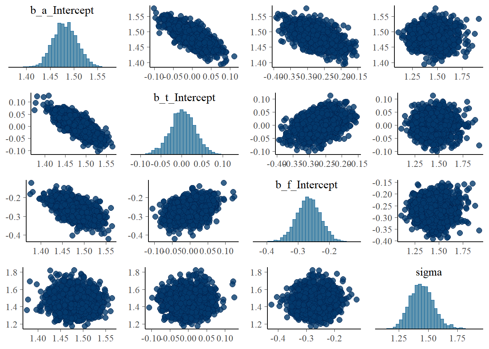
6.2.1 Blocked by consequence
これは、処置後の真菌を入れたことによって、T -> h1へのパスがブロックされたからである。（h1とTについてバックドア基準を満たさない）
よって、Fを除外してモデリングする必要がある。
b6.3_ht <-
brm(
data = d3,
family = gaussian,
formula = bf(h1 ~ h0*(a + t*T),
a+t ~ 1,
nl = TRUE),
prior=c(prior(lognormal(0,0.2),nlpar = a,lb = 0),
prior(normal(0, 0.5), nlpar = t),
prior(exponential(1), class = sigma)),
iter = 2000, warmup = 1000, chains = 4,
seed =6,
backend = "cmdstanr",
file = "output/Chapter6/b6.3_ht"
)
posterior_summary(b6.3_ht) %>%
round(2) %>%
data.frame() %>%
rownames_to_column(var = "parameter") %>%
as_tibble()## # A tibble: 5 × 5
## parameter Estimate Est.Error Q2.5 Q97.5
## <chr> <dbl> <dbl> <dbl> <dbl>
## 1 b_a_Intercept 1.38 0.03 1.33 1.43
## 2 b_t_Intercept 0.08 0.04 0.02 0.15
## 3 sigma 1.79 0.13 1.56 2.05
## 4 lprior -2.97 0.2 -3.39 -2.6
## 5 lp__ -202. 1.23 -205. -201.6.2.2 Fungus and d-separation
DAGを用いて考えてみる。
dag_coords <-
tibble(name = c("H0", "T", "F", "H1"),
x = c(1, 5, 4, 3),
y = c(2, 2, 1.5, 1))
dag <-
dagify(F ~ T,
H1 ~ H0 + F,
coords = dag_coords)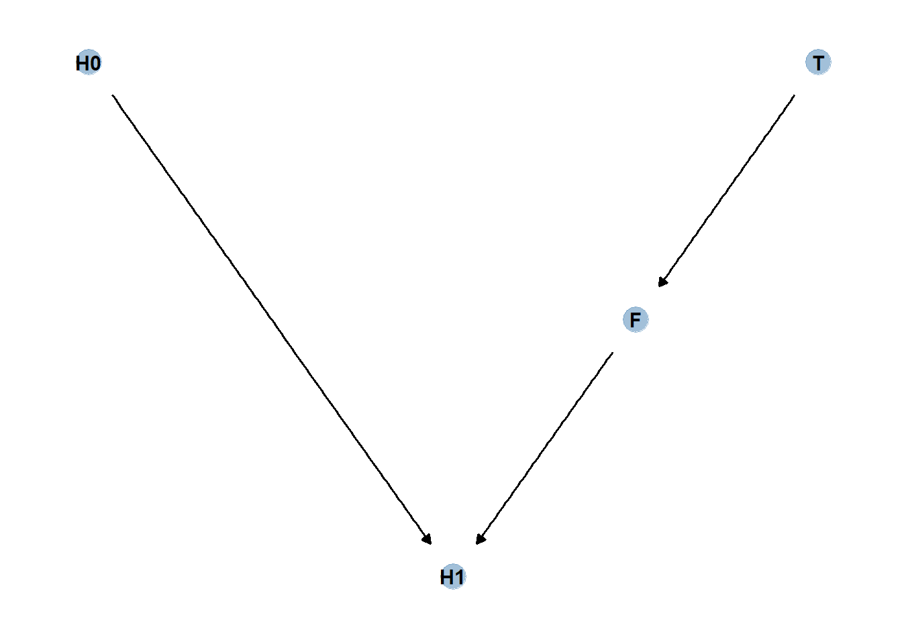
上記の因果モデルにおいて、条件付き独立を求めると、Fで条件づけたときにH1とTが独立になってしまうことが分かる。
このとき、H1とTはFで条件づけたときにd分離しているという。
impliedConditionalIndependencies(dag)## F _||_ H0
## H0 _||_ T
## H1 _||_ T | F続いて、以下のような因果モデルを考える。
このモデルでは、H0と水分(M、非観測変数)のみがH1に影響を与え、MとTがFに影響を与えるとする。このとき,
Tだけを説明変数に入れてもH1との関連は見られないが、Fを入れるとTとH1に関連がみられる。
dag_coords <-
tibble(name = c("H0", "H1", "M", "F", "T"),
x = c(1, 2, 2.5, 3, 4),
y = c(2, 2, 1, 2, 2))
# save our DAG
dag <-
dagify(F ~ M + T,
H1 ~ H0 + M,
coords = dag_coords)
dag %>%
ggplot(aes(x = x, y = y, xend = xend, yend = yend)) +
geom_dag_point(aes(color = name == "M"),
alpha = 1/2, size = 6.5, show.legend = F) +
geom_point(x = 2.5, y = 1,
size = 6.5, shape = 1, stroke = 1, color = "orange") +
geom_dag_text(color = "black") +
geom_dag_edges() +
scale_color_manual(values = c("steelblue", "orange")) +
theme_dag()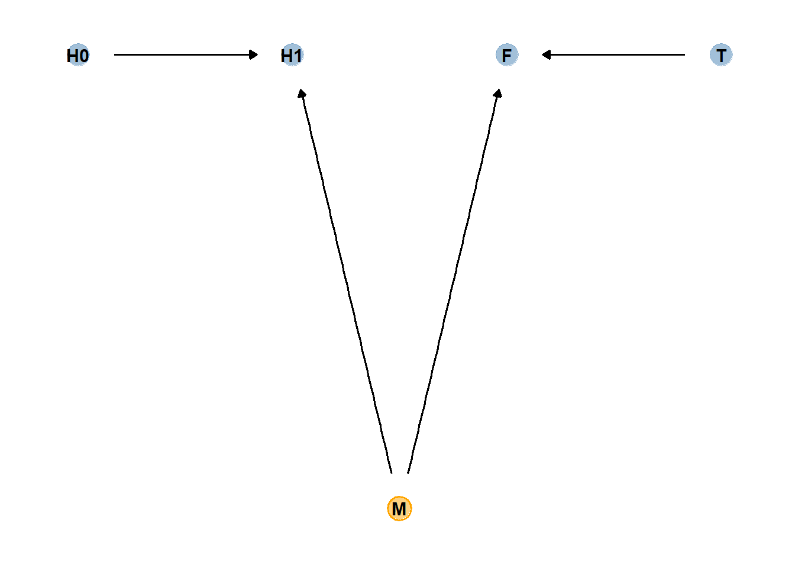
set.seed(71)
n <- 1000
d4 <- tibble(
h0 = rnorm(n, 10,2),
T = rep(0:1, each = n/2),
M = rbern(n),
F = rbinom(n, size=1, prob = 0.5-T*0.4+0.4*M),
h1 = h0 + rnorm(n, mean =5 + 3*M, sd=1)
)
head(d4)## # A tibble: 6 × 5
## h0 T M F h1
## <dbl> <int> <int> <int> <dbl>
## 1 9.14 0 0 0 14.8
## 2 9.11 0 0 0 15.3
## 3 9.04 0 1 1 16.4
## 4 10.8 0 1 1 19.1
## 5 9.16 0 1 1 17.2
## 6 7.63 0 0 0 13.4b6.3_ht2 <-
update(b6.3_ht,
newdata = d4,
seed =6,
file = "output/Chapter6/b6.3_ht2")
b6.3_htf2 <-
update(b6.3_htf,
newdata = d4,
seed =6,
file = "output/Chapter6/b6.3_htf2")
posterior_summary(b6.3_ht2) %>%
round(2) %>%
data.frame() %>%
rownames_to_column(var = "parameter") %>%
as_tibble()## # A tibble: 5 × 5
## parameter Estimate Est.Error Q2.5 Q97.5
## <chr> <dbl> <dbl> <dbl> <dbl>
## 1 b_a_Intercept 1.62 0.01 1.6 1.64
## 2 b_t_Intercept -0.01 0.01 -0.04 0.02
## 3 sigma 2.21 0.05 2.12 2.31
## 4 lprior -5.17 0.09 -5.36 -4.99
## 5 lp__ -2216. 1.21 -2219. -2215.posterior_summary(b6.3_htf2) %>%
round(2) %>%
data.frame() %>%
rownames_to_column(var = "parameter") %>%
as_tibble()## # A tibble: 6 × 5
## parameter Estimate Est.Error Q2.5 Q97.5
## <chr> <dbl> <dbl> <dbl> <dbl>
## 1 b_a_Intercept 1.52 0.01 1.5 1.55
## 2 b_t_Intercept 0.05 0.01 0.02 0.08
## 3 b_f_Intercept 0.14 0.01 0.12 0.17
## 4 sigma 2.11 0.05 2.02 2.2
## 5 lprior -4.54 0.11 -4.75 -4.34
## 6 lp__ -2169. 1.41 -2172. -2167.これはなぜだろうか？
次節でこの問題を見ていく。
6.3 Collider bias
再び、本章冒頭の例を考える。
DAGは以下のようになる。
dag_coords <-
tibble(name = c("T", "S", "N"),
x = c(1, 2, 3),
y = c(2, 1, 2))
dag <- dagify(S ~ T,
S ~ N,
coords = dag_coords)
gg_simple_dag(dag)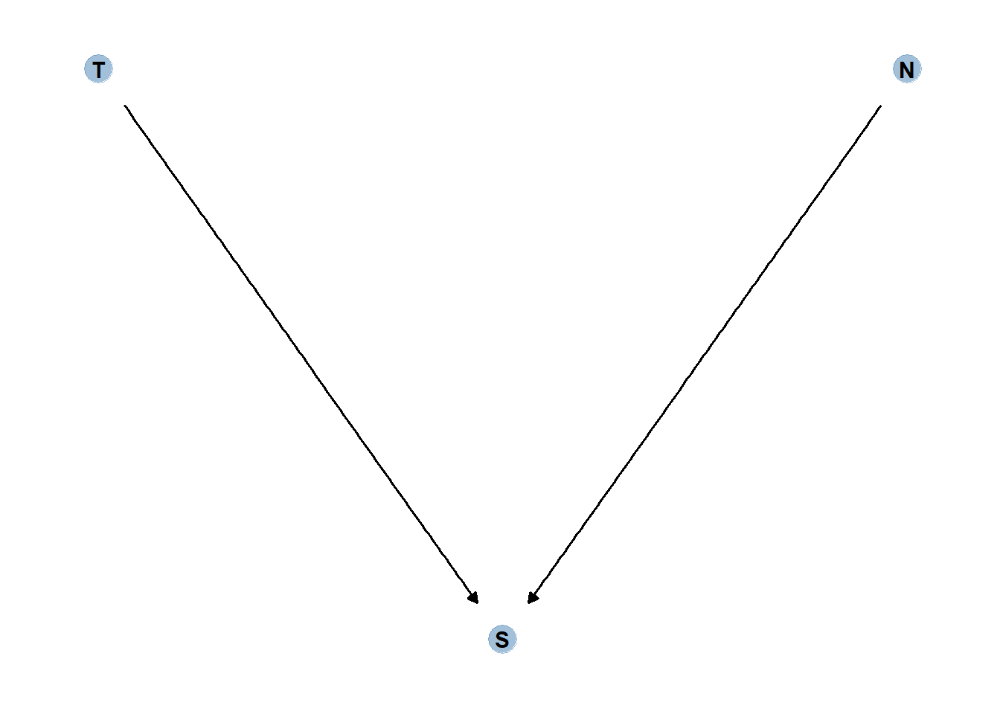
このとき、Sについて条件づけると、TとNの間に疑似相関が生じてしまう。
6.3.1 Collider of false sorrow
年齢(A)が幸福(H)にどう影響するかを検討したいとする。
ここでは、幸せは生まれた瞬間に決定し、年齢とは関係ないと仮定する。一方で、年齢と幸福が結婚(M)に影響を与えるとする。
DAGは以下の通り。
dag_coords <-
tibble(name = c("H", "M", "A"),
x = c(1, 2, 3),
y = c(2, 1, 2))
dag <- dagify(M ~ H,
M ~ A,
coords = dag_coords)
gg_simple_dag(dag)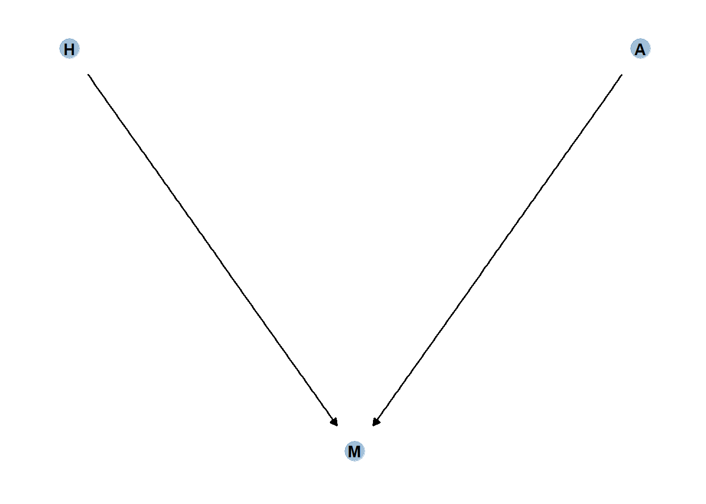
シミュレーションをする。
d5 <- sim_happiness(seed = 1977, N_years = 1000)
posterior_summary(d5) %>%
round(2) %>%
data.frame() %>%
rownames_to_column(var = "parameter") %>%
as_tibble()## # A tibble: 3 × 5
## parameter Estimate Est.Error Q2.5 Q97.5
## <chr> <dbl> <dbl> <dbl> <dbl>
## 1 age 33 18.8 2 64
## 2 married 0.3 0.46 0 1
## 3 happiness 0 1.21 -2 2d5 %>%
ggplot(aes(x = age, y = happiness, fill= as.factor(married)))+
geom_point(size=2.3, shape=21, color = "black") +
scale_fill_manual(values = c("white","blue"))+
theme_bw()+
theme(legend.position = "none")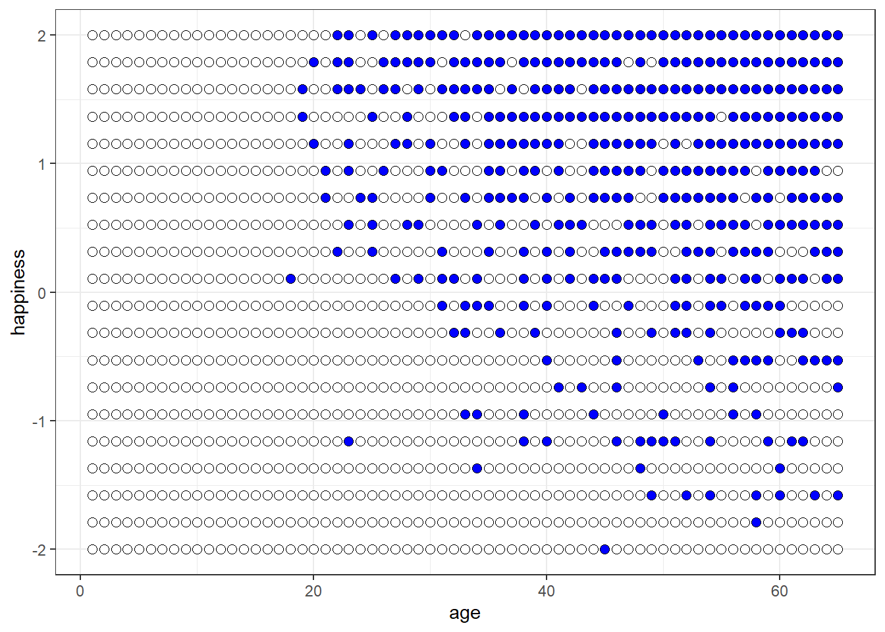
まず、以下のモデルを考え、結婚状態をコントロールうえで年齢が幸福度に与える影響を考える。
\(\mu_{i} = \alpha_{MID[i]} + \beta_{A}A_{i}\)
d5 %>%
filter(age >17) %>%
mutate(A = (age-18)/(65-18)) %>%
mutate(M = factor(married + 1, labels = c("single", "married"))) -> d6モデルを回すと、年齢が幸福と負に関連していることになる。
b6.4 <-
brm(data = d6,
family = gaussian,
formula = happiness ~0 + M + A,
prior = c(prior(normal(0,1),class = b,
coef=Mmarried),
prior(normal(0,1),class = b,
coef = Msingle),
prior(normal(0,2),class = b,
coef = A),
prior(exponential(1), class = sigma)),
iter = 2000, warmup=1000,
backend = "cmdstanr",
file = "output/Chapter6/b6.4")
posterior_summary(b6.4) %>%
round(2) %>%
data.frame() %>%
rownames_to_column(var = "parameter") %>%
as_tibble()## # A tibble: 6 × 5
## parameter Estimate Est.Error Q2.5 Q97.5
## <chr> <dbl> <dbl> <dbl> <dbl>
## 1 b_Msingle -0.24 0.06 -0.36 -0.11
## 2 b_Mmarried 1.26 0.09 1.09 1.43
## 3 b_A -0.75 0.12 -0.97 -0.53
## 4 sigma 0.99 0.02 0.95 1.04
## 5 lprior -5.34 0.12 -5.6 -5.12
## 6 lp__ -1360. 1.43 -1364. -1359.一方で、年齢のみを説明変数に入れると、年齢の影響はなくなる。
つまり、結婚の有無を変数に入れたことによって年齢と幸福度の間に疑似相関が生じていた。
b6.4_2 <-
brm(data = d6,
family = gaussian,
formula = happiness ~1 + A,
prior = c(prior(normal(0,1),class = b),
prior(normal(0,2),class = Intercept),
prior(exponential(1), class = sigma)),
iter = 2000, warmup=1000,
backend = "cmdstanr",
file = "output/Chapter6/b6.4_2")
posterior_summary(b6.4_2) %>%
round(2) %>%
data.frame() %>%
rownames_to_column(var = "parameter") %>%
as_tibble()## # A tibble: 5 × 5
## parameter Estimate Est.Error Q2.5 Q97.5
## <chr> <dbl> <dbl> <dbl> <dbl>
## 1 b_Intercept 0 0.08 -0.15 0.15
## 2 b_A 0 0.13 -0.26 0.25
## 3 sigma 1.22 0.03 1.16 1.27
## 4 lprior -3.76 0.03 -3.82 -3.7
## 5 lp__ -1553. 1.23 -1556. -1552.6.3.2 The haunted DAG
以下の例を考える。
両親(P)と祖父母(G)が子どもの学業成績(C)に直接影響を与えているが、GはPを通してもCに影響を与えているとする。
また、未観測の変数(U)がPとCに影響を与えているとする。
dag_coords <-
tibble(name = c("G", "P", "C", "U"),
x = c(1, 2, 2, 2.5),
y = c(2, 2, 1, 1.5))
dag <-
dagify(C ~ G + P + U,
P ~ G + U,
coords = dag_coords)
gg_fancy_dag(dag, x=2.5,y=1.5,circle = "U")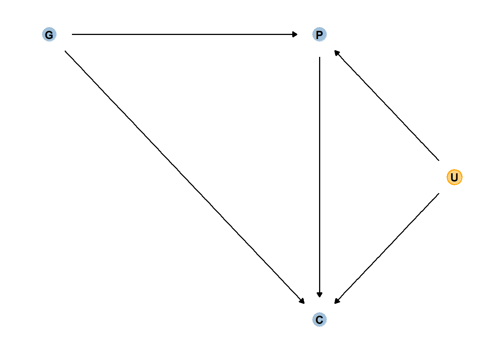
以下のようにシミュレーションする。
ここで、GがCに直接与える影響は0と仮定する。
n <- 200
b_GC <- 0
b_GP <- 1
b_PC <- 1
b_U <- 2
set.seed(1)
d7 <- tibble(
U = 2*rbern(n, 0.5)-1,
G = rnorm(n),
P = rnorm(n, b_GP*G + b_U*U,sd=1),
C = rnorm(n, b_PC*P + b_U*U + b_GC*G,sd=1)
)
head(d7)## # A tibble: 6 × 4
## U G P C
## <dbl> <dbl> <dbl> <dbl>
## 1 -1 -0.620 -1.73 -3.65
## 2 -1 0.0421 -3.01 -5.30
## 3 1 -0.911 3.06 3.88
## 4 1 0.158 1.77 3.79
## 5 -1 -0.655 -1.00 -2.01
## 6 1 1.77 5.28 8.87ggpairs(d7)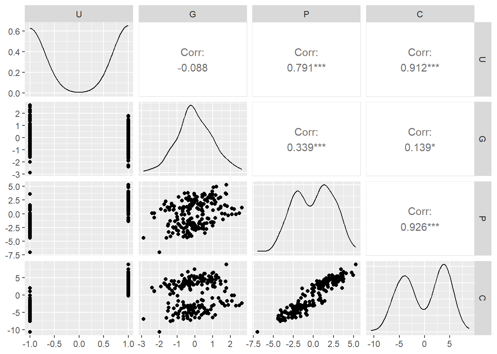
C ~ G + Pのモデリングを行うと…。
Pの影響が2倍近くになっており、Gが負の影響を与えているという結果になってしまっている。
b6.5 <-
brm(data = d7,
family = gaussian,
formula = C ~ 0 + Intercept+P+G,
prior = c(prior(normal(0,1),class = b),
prior(exponential(1),class=sigma)),
backend = "cmdstanr",
seed =6, file = "output/Chapter6/b6.5")
posterior_summary(b6.5) %>%
round(2) %>%
data.frame() %>%
rownames_to_column(var = "parameter") %>%
as_tibble()## # A tibble: 6 × 5
## parameter Estimate Est.Error Q2.5 Q97.5
## <chr> <dbl> <dbl> <dbl> <dbl>
## 1 b_Intercept -0.12 0.1 -0.32 0.07
## 2 b_P 1.79 0.04 1.7 1.87
## 3 b_G -0.84 0.11 -1.06 -0.62
## 4 sigma 1.43 0.07 1.29 1.58
## 5 lprior -6.15 0.16 -6.47 -5.85
## 6 lp__ -361. 1.43 -365. -359.これは、Pを固定（例えば40-60%のものにデータを限定）してみるとよくわかる。
Pを固定したとき、Gが低ければUは高くなるし、Gが高ければUは低くなる（U -> P <- Gなので）。そして、Uが高いほどはCも高いので、結果的にGが低いほどCも高いという結果が得られることになる。
d7 %>%
mutate(C = standardize(C), G = standardize(G)) %>%
mutate(P40_60 = ifelse(P < quantile(P,probs = .6)& P > quantile(P, probs = .4), TRUE,FALSE)) %>%
ggplot(aes(x=G, y=C))+
geom_point(aes(shape = as.factor(P40_60),
color = as.factor(U)),
size=3.5, stroke=3/4)+
scale_color_manual(values =
c("black","navy"))+
scale_shape_manual(values =c(1,19))+
geom_smooth(data = . %>% filter(P40_60=="TRUE"),
method = "lm", se = FALSE, fullrange=T,
color = "black", size=1/2)+
labs(x="granpa education (G)",
y = "grandchild eduaction (C)",
title = "Parents in 45th and 60th centiles")+
theme(aspect.ratio=1,
legend.position = "none")+
annotate(geom="text", x=-2,y=2,label="U = 1",
color = "navy")+
annotate(geom="text", x=2,y=-2,label="U = -1",
color = "black")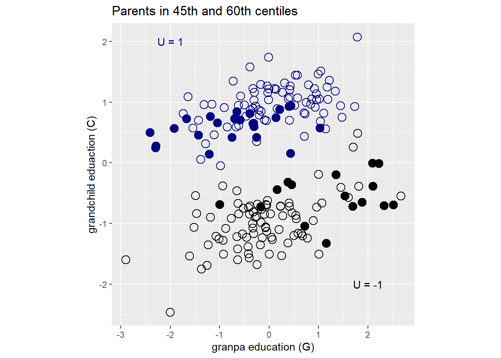
ここで、Uが観測できたとしてモデリングを行うと、Gの効果はなくなり、Pの効果も正しく推定できるようになる。
b6.5_2 <-
brm(data = d7,
family = gaussian,
formula = C ~ 0 + Intercept+P+G+U,
prior = c(prior(normal(0,1),class = b),
prior(exponential(1),class=sigma)),
backend = "cmdstanr",
seed =6, file = "output/Chapter6/b6.5_2")
posterior_summary(b6.5_2) %>%
round(2) %>%
data.frame() %>%
rownames_to_column(var = "parameter") %>%
as_tibble()## # A tibble: 7 × 5
## parameter Estimate Est.Error Q2.5 Q97.5
## <chr> <dbl> <dbl> <dbl> <dbl>
## 1 b_Intercept -0.12 0.07 -0.26 0.02
## 2 b_P 1.02 0.07 0.88 1.14
## 3 b_G -0.05 0.1 -0.24 0.15
## 4 b_U 1.98 0.15 1.69 2.27
## 5 sigma 1.04 0.05 0.94 1.14
## 6 lprior -7.23 0.24 -7.74 -6.8
## 7 lp__ -298. 1.61 -302. -296.6.4 Confronting confoundings
上記のように、モデルに入れる変数を身長に選ばなければ交絡が生じてしまう。
ゆえに、バックドア基準を満たすような変数を入れることが肝要である。
因果モデルはどんなに複雑であろうと、以下の4つの関係の組み合わせからなる。
The fork
Zで条件づけられれば、XとYは独立になる。
The Pipe
Zで条件づけるとXからYへのパスがふさがれてしまう。
The Collider
Zで条件づけると、XとYの間に疑似相関が生じてしまう。
The Descendant
Dで条件づけるとZも部分的に条件づけられてしまうため、XとYの間に疑似相関が生じてしまう。
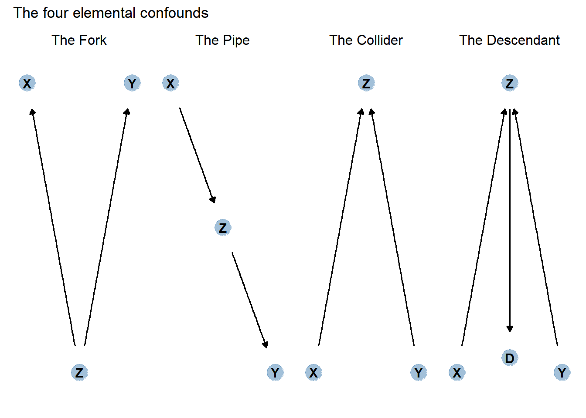
6.5 Practice
6.5.1 6M1
Modify the DAG on page 186 to include the variable V, an unobserved cause of C and Y: C←V→Y. Reanalyze the DAG. How many paths connect X to Y? Which must be closed? Which variables should you condition on now?
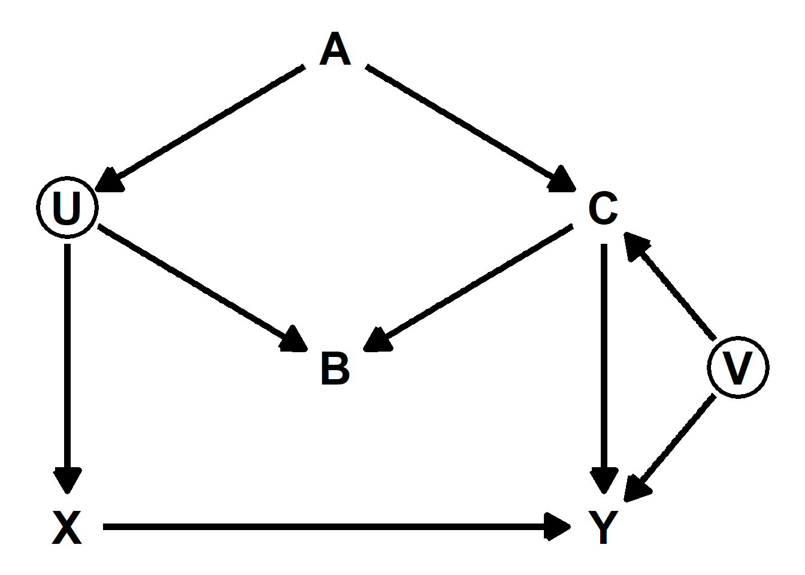
new_dag <- dagitty("dag { U [unobserved]
V [unobserved]
X -> Y
X <- U <- A -> C -> Y
U -> B <- C
C <- V -> Y }")
adjustmentSets(new_dag, exposure = "X", outcome = "Y")## { A }6.5.2 6M2
Sometimes, in order to avoid multicollinearity, people inspect pairwise correlations among predictors before including them in a model. This is a bad procedure, because what matters is the conditional association, not the association before the variables are included in the model. To highlight this, consider the DAG X→Z→Y. Simulate data from this DAG so that the correlation between X and Z is very large. Then include both in a model prediction Y . Do you observe any multicollinearity? Why or why not? What is different from the legs example in the chapter?
set.seed(1984)
n <- 100
dat <- tibble(x = rnorm(n,0,1)) %>%
mutate(z = rnorm(n,x,0.4),
y = rnorm(n,z,1))
cor(dat)## x z y
## x 1.0000000 0.9325230 0.7431466
## z 0.9325230 1.0000000 0.8063858
## y 0.7431466 0.8063858 1.0000000pairs(dat)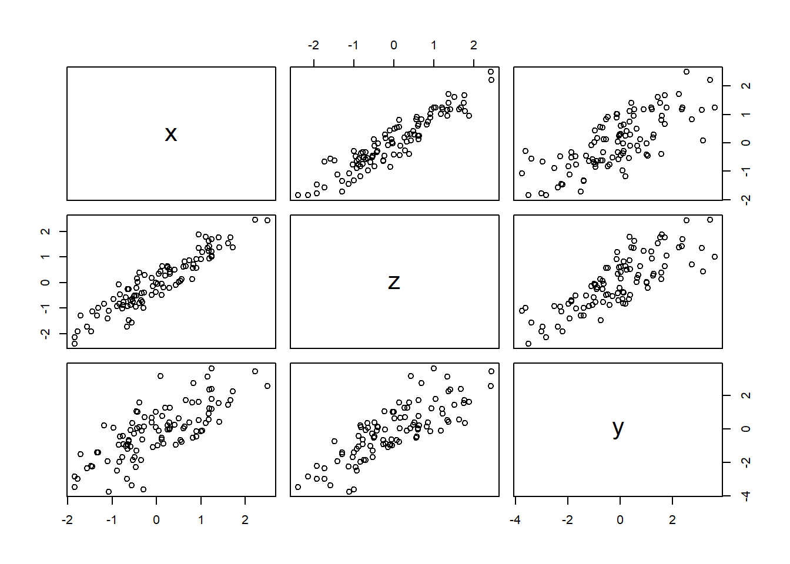
上手く推定できてると思われる。
b6M2 <-
brm(
data = dat,
family = gaussian,
formula = y ~ 1 + z + x,
prior = c(prior(normal(0,0.2),class = Intercept),
prior(normal(0,0.5),class =b),
prior(exponential(1),class=sigma)),
iter=4000, warmup=2000, chains =4, seed=1234,
backend = "cmdstanr",
file = "output/Chapter6/b6M2"
)
posterior_summary(b6M2) %>%
round(2) %>%
data.frame() %>%
rownames_to_column(var = "parameter") %>%
as_tibble()## # A tibble: 6 × 5
## parameter Estimate Est.Error Q2.5 Q97.5
## <chr> <dbl> <dbl> <dbl> <dbl>
## 1 b_Intercept -0.12 0.09 -0.29 0.06
## 2 b_z 1.08 0.21 0.66 1.49
## 3 b_x 0.14 0.23 -0.31 0.6
## 4 sigma 0.96 0.07 0.84 1.11
## 5 lprior -3.54 0.86 -5.6 -2.29
## 6 lp__ -142. 1.45 -145. -140.posterior_samples(b6M2) %>%
as_tibble() %>%
dplyr::select(-lp__) %>%
pivot_longer(everything()) %>%
ggplot(aes(x = value, y = name)) +
stat_halfeye(.width = c(0.67, 0.89, 0.97))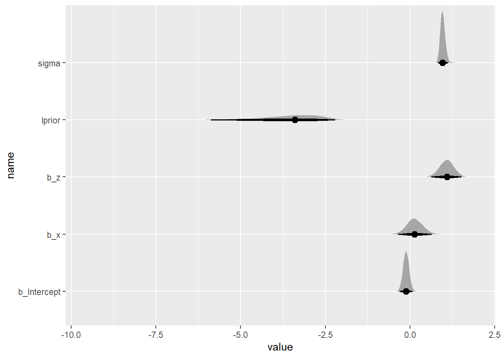
pairs(b6M2)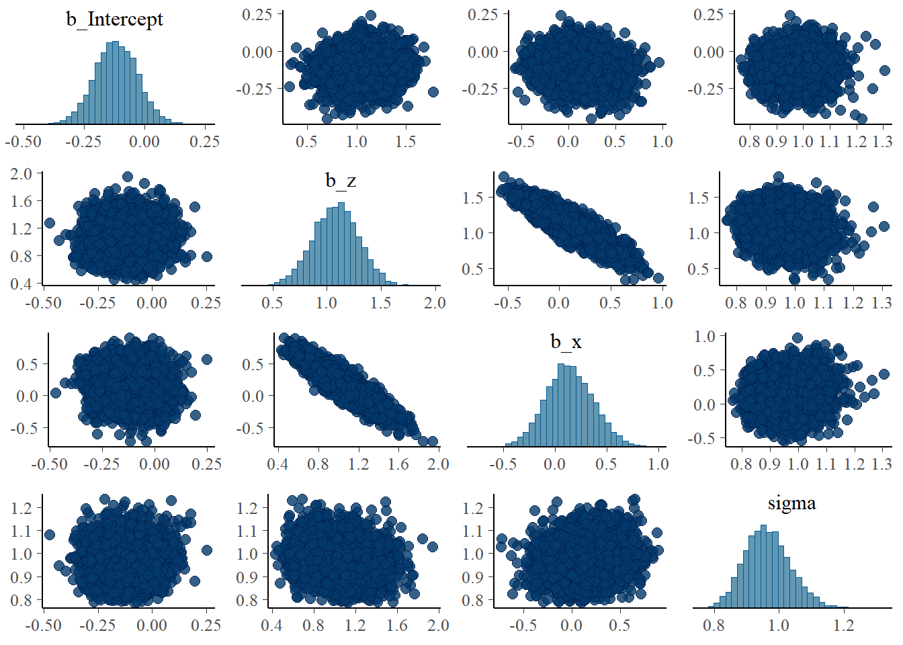
繰り返してみる。
推定結果も両脚と身長の例ほどはばらついていない。
sim_and_fit <- function(seed, n = 100) {
n <- n
set.seed(seed)
dat <- tibble(x = rnorm(n,0,1)) %>%
mutate(z = rnorm(n,x,0.4),
y = rnorm(n,z,1))
fit <- update(b6M2, newdata = dat)
}
#sim2 <-
# tibble(seed = 1:4) %>%
#mutate(post = purrr::map(seed, ~sim_and_fit(.) %>%
# posterior_samples()))
sim2 <- readRDS("output/Chapter6/sim2.rds")
sim2 %>%
unnest(post) %>%
pivot_longer(b_Intercept:sigma) %>%
mutate(seed = str_c("seed ", seed)) %>%
ggplot(aes(x = value, y = name)) +
stat_pointinterval(.width = .95, color = "forestgreen") +
labs(x = "posterior", y = NULL) +
theme(axis.text.y = element_text(hjust = 0),
panel.border = element_rect(color = "black", fill = "transparent"),
panel.grid.minor = element_blank(),
strip.text = element_text(hjust = 0)) +
facet_wrap(~ seed, ncol = 1)
これは、身長の例では両脚(L,R)がどちらも身長(H)を予測するのに対して、今回の例ではZのみがYを予測し、XからYへのパスはブロックされているから。
このように、多重共線性が生じるかは単純に変数間の相関だけではわからず、因果モデルを考える必要がある。
6.5.3 6H1
Use the Waffle House data,
data(WaffleDivorce), to find the total causal influence of number of Waffle Houses on divorce rate. Justify your model or models with a causal graph.
data("WaffleDivorce")
dat2 <- WaffleDivorce %>%
mutate(M = standardize(Marriage),
A = standardize(MedianAgeMarriage),
D = standardize(Divorce),
S = factor(South + 1, labels = c("North", "South")),
W = standardize(WaffleHouses)) Sを入れてモデリング。
Wはほとんど影響していないことが分かる。
b6H1 <-
brm(data = dat2,
family = gaussian,
formula = D ~ 0 + W + S,
prior = c(prior(normal(0,0.5),class =b),
prior(exponential(1),class = sigma)),
iter=4000, warmup=2000,
backend = "cmdstanr",
file = "output/Chapter6/b6H1")
posterior_summary(b6H1) %>%
round(2) %>%
data.frame() %>%
rownames_to_column(var = "parameter") %>%
as_tibble()## # A tibble: 6 × 5
## parameter Estimate Est.Error Q2.5 Q97.5
## <chr> <dbl> <dbl> <dbl> <dbl>
## 1 b_W 0.09 0.16 -0.23 0.41
## 2 b_SNorth -0.16 0.17 -0.49 0.17
## 3 b_SSouth 0.36 0.27 -0.17 0.88
## 4 sigma 0.97 0.1 0.79 1.19
## 5 lprior -2.22 0.47 -3.48 -1.67
## 6 lp__ -71.4 1.42 -75.0 -69.66.5.4 6H2
Build a series of models to test the implied conditional independencies of the causal graph you used in the previous problem. If any of the tests fail, how do you think the graph needs to be ammended? Does the graph need more or fewer arrows? Feel free to nominate variables that aren’t in the data.
DAGの条件付き独立がどのような時に起こるかを調べてみる。 以下の3つをモデリングしてみる。
dag_coords <-
tibble(name = c("A", "D", "M", "S", "W"),
x = c(1, 3, 2, 1, 3),
y = c(1, 1, 2, 3, 3))
waffle_dag <-
dagify(A ~ S,
D ~ A + M + W,
M ~ A + S,
W ~ S,
coords = dag_coords)
impliedConditionalIndependencies((waffle_dag))## A _||_ W | S
## D _||_ S | A, M, W
## M _||_ W | Sモデルの結果、1と3については条件付き独立を支持する結果が得られたた。
2については信用区間が0にまたがっているが若干あいまいな結果だった。これはおそらくまだ他の要因が関わっているからだと思われる。
b6H2_1 <- brm(data = dat2,
family = gaussian,
formula = A ~ 1 + W + South,
prior = c(prior(normal(0,0.2),class = Intercept),
prior(normal(0,0.5),class =b),
prior(exponential(1),class = sigma)),
iter=4000, warmup=2000,
backend = "cmdstanr",
file = "output/Chapter6/b6H2_1")
b6H2_2 <- brm(data = dat2,
family = gaussian,
formula = D ~ 1 + A + M + W + South,
prior = c(prior(normal(0,0.2),class = Intercept),
prior(normal(0,0.5),class =b),
prior(exponential(1),class = sigma)),
iter=4000, warmup=2000,
backend = "cmdstanr",
file = "output/Chapter6/b6H2_2")
b6H2_3 <- brm(data = dat2,
family = gaussian,
formula = M ~ 1 + W + South,
prior = c(prior(normal(0,0.2),class = Intercept),
prior(normal(0,0.5),class =b),
prior(exponential(1),class = sigma)),
iter=4000, warmup=2000,
backend = "cmdstanr",
file = "output/Chapter6/b6H2_3")
posterior_summary(b6H2_1) %>%
round(2) %>%
data.frame() %>%
rownames_to_column(var = "parameter") %>%
as_tibble()## # A tibble: 6 × 5
## parameter Estimate Est.Error Q2.5 Q97.5
## <chr> <dbl> <dbl> <dbl> <dbl>
## 1 b_Intercept 0.11 0.15 -0.17 0.4
## 2 b_W 0.01 0.17 -0.33 0.33
## 3 b_South -0.4 0.32 -1.02 0.25
## 4 sigma 1 0.1 0.82 1.23
## 5 lprior -1.51 0.66 -3.22 -0.75
## 6 lp__ -72.1 1.44 -75.7 -70.3posterior_summary(b6H2_2) %>%
round(2) %>%
data.frame() %>%
rownames_to_column(var = "parameter") %>%
as_tibble()## # A tibble: 8 × 5
## parameter Estimate Est.Error Q2.5 Q97.5
## <chr> <dbl> <dbl> <dbl> <dbl>
## 1 b_Intercept -0.07 0.13 -0.32 0.18
## 2 b_A -0.55 0.16 -0.86 -0.23
## 3 b_M -0.04 0.16 -0.34 0.27
## 4 b_W 0.11 0.14 -0.17 0.38
## 5 b_South 0.23 0.29 -0.33 0.8
## 6 sigma 0.81 0.09 0.66 1
## 7 lprior -2.21 0.54 -3.53 -1.43
## 8 lp__ -62.7 1.81 -67.2 -60.2posterior_summary(b6H2_3) %>%
round(2) %>%
data.frame() %>%
rownames_to_column(var = "parameter") %>%
as_tibble()## # A tibble: 6 × 5
## parameter Estimate Est.Error Q2.5 Q97.5
## <chr> <dbl> <dbl> <dbl> <dbl>
## 1 b_Intercept -0.04 0.15 -0.33 0.25
## 2 b_W -0.02 0.17 -0.35 0.31
## 3 b_South 0.15 0.32 -0.48 0.76
## 4 sigma 1.02 0.11 0.84 1.26
## 5 lprior -1.27 0.48 -2.49 -0.72
## 6 lp__ -73.1 1.44 -76.8 -71.36.5.5 6H3
Use a model to infer the total causal influence of area on weight. Would increasing the area available to each fox make it heavier (healthier)? You might want to standardize the variables. Regardless, use prior predictive simulation to show that your model’s prior predictions stay within the possible outcome range.
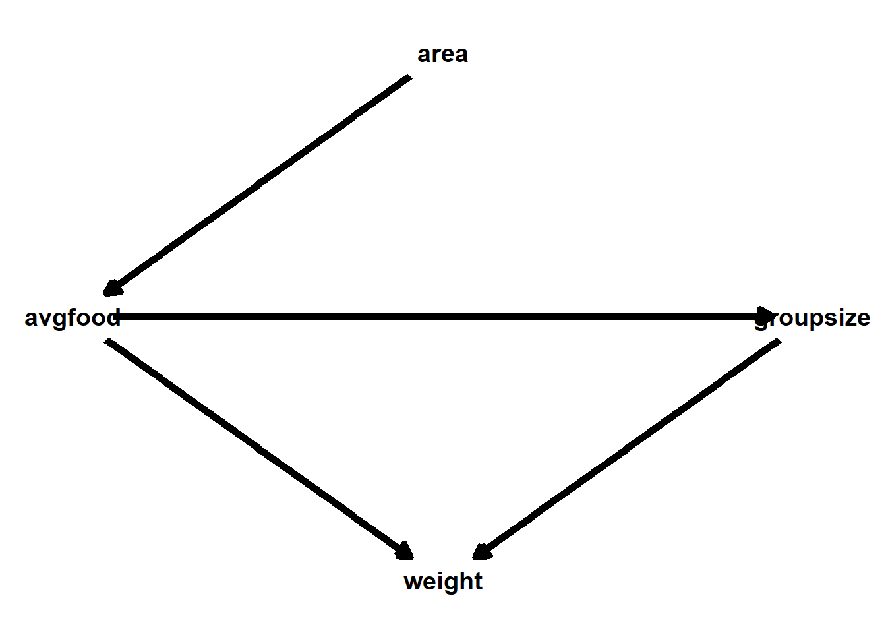
areaとweightは他の変数を条件づけなくてもバックドア基準を満たすため、どの変数も入れなくてよい。
dag_fox <- dagitty(
"dag{
area -> avgfood -> weight <- groupsize ;
avgfood -> groupsize
}"
)
adjustmentSets(dag_fox, exposure = "area", outcome ="weight")## {}data(foxes)
dat3 <- foxes %>%
as_tibble() %>%
dplyr::select(area, avgfood, weight, groupsize) %>%
mutate(across(everything(),standardize))
head(dat3)## # A tibble: 6 × 4
## area avgfood weight groupsize
## <dw_trnsf> <dw_trnsf> <dw_trnsf> <dw_trnsf>
## 1 -2.239596 -1.924829 0.4141347 -1.524089
## 2 -2.239596 -1.924829 -1.4270464 -1.524089
## 3 -1.205508 -1.118035 0.6759540 -1.524089
## 4 -1.205508 -1.118035 1.3009421 -1.524089
## 5 -1.130106 -1.319734 1.1151348 -1.524089
## 6 -1.130106 -1.319734 -1.0807692 -1.524089pairs(dat3)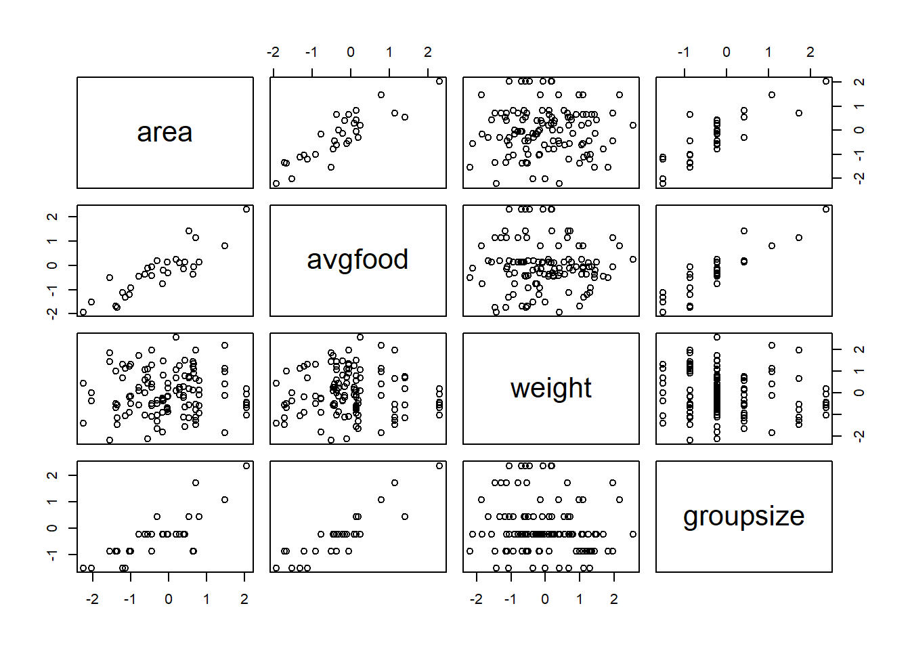
b6H3 <-
brm(data = dat3,
family = gaussian,
formula = weight ~ 1 + area,
prior = c(prior(normal(0, 0.2),class=Intercept),
prior(normal(0, 0.5), class = b,),
prior(exponential(1), class = sigma)),
iter = 4000, warmup = 2000, chains = 4, cores = 4, seed = 1234,
backend = "cmdstanr",
file = "output/Chapter6/b6H3")areaはほとんど影響していなかった。
posterior_samples(b6H3) %>%
as_tibble() %>%
dplyr::select(-lp__) %>%
pivot_longer(everything()) %>%
mutate(name = factor(name, levels = c("b_Intercept", "b_area", "sigma"))) %>%
ggplot(aes(x = value, y = fct_rev(name))) +
stat_halfeye(.width = c(0.67, 0.89, 0.97)) +
labs(x = "Parameter Estimate", y = "Parameter")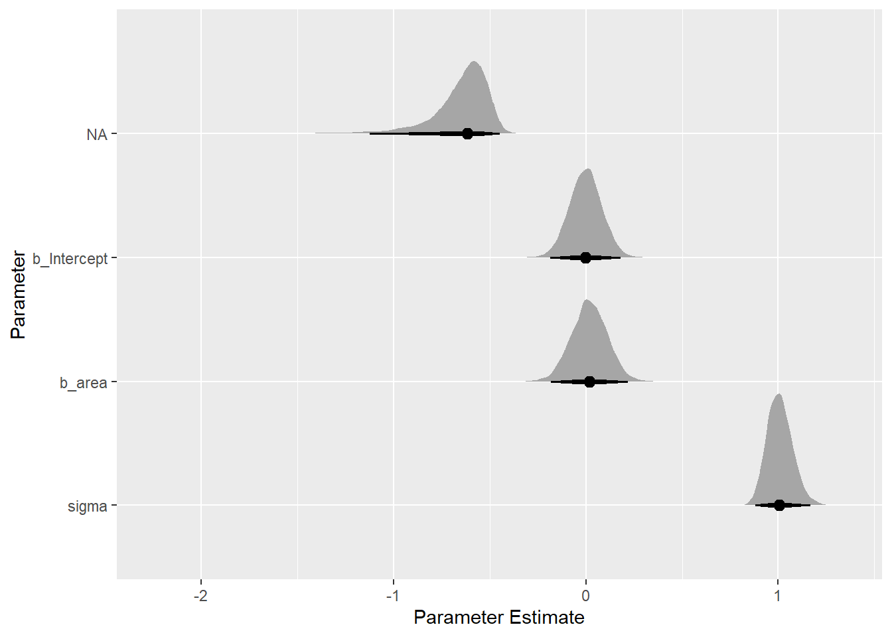
6.5.6 6H4
Now infer the causal impact of adding food to a territory. Would this make foxes heavier? Which covariates do you need to adjust for to estimate the total causal influence of food?
続いて、えさの量が体重に与える影響を考える。
えさの量が体重に与える影響を評価するために他の変数を加える必要はない。
adjustmentSets(dag_fox, exposure = "avgfood", outcome ="weight")## {}えさの量も影響せず。
b6H4 <-
brm(data = dat3,
family = gaussian,
formula = weight ~ 1 + avgfood,
prior = c(prior(normal(0, 0.2),class=Intercept),
prior(normal(0, 0.5), class = b,),
prior(exponential(1), class = sigma)),
iter = 4000, warmup = 2000, chains = 4, cores = 4, seed = 1234,
backend = "cmdstanr",
file = "output/Chapter6/b6H4")
posterior_samples(b6H4) %>%
as_tibble() %>%
dplyr::select(-lp__) %>%
pivot_longer(everything()) %>%
mutate(name = factor(name, levels = c("b_Intercept", "b_avgfood", "sigma"))) %>%
ggplot(aes(x = value, y = fct_rev(name))) +
stat_halfeye(.width = c(0.67, 0.89, 0.97)) +
labs(x = "Parameter Estimate", y = "Parameter")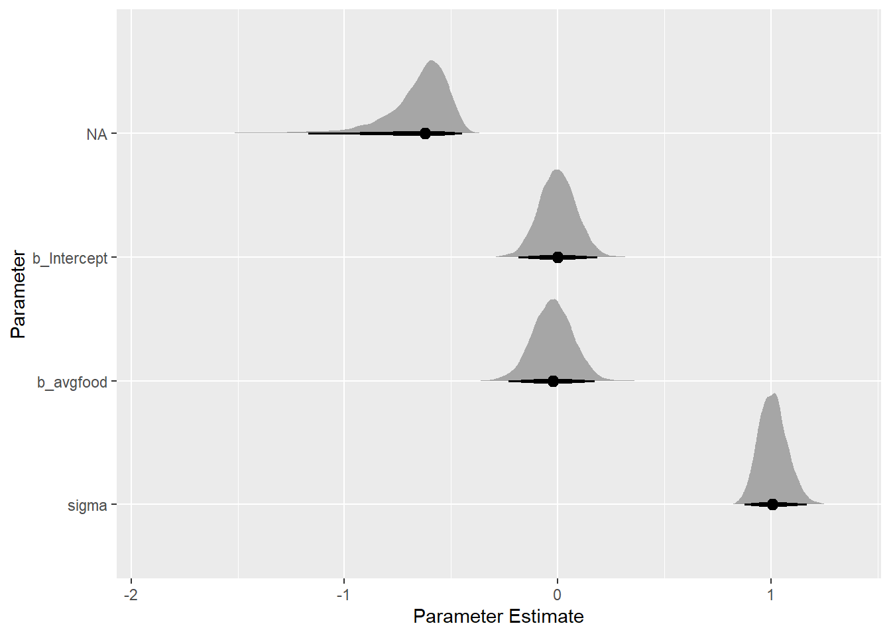
6.5.7 6H5
Now infer the causal impact of group size. Which covariates do you need to adjust for? Looking at the posterior distribution of the resulting model, what do you think explains these data? That is, can you explain the estimates for all three problems? How do they go together?
最後にgroupsizeの影響を見る。その際には、avgfoodも説明変数に入れる必要がある。
その結果、groupsizeはavgfoodを固定したときに負の影響を与えていることが分かった。また、avgfoodはgroupsizeを固定したときに正の影響を与えることが分かった。
ただし、avgfoodがweightに与える全体的な影響は前問で見たように0である。これは、avgfoodが増えればgroupsizeも増えてしまうからである。
b6H5 <-
brm(data = dat3,
family = gaussian,
formula = weight ~ 1 + avgfood + groupsize,
prior = c(prior(normal(0, 0.2),class=Intercept),
prior(normal(0, 0.5), class = b,),
prior(exponential(1), class = sigma)),
iter = 4000, warmup = 2000, chains = 4, cores = 4, seed = 1234,
file = "output/Chapter6/b6H5")
posterior_samples(b6H5) %>%
as_tibble() %>%
dplyr::select(-lp__) %>%
pivot_longer(everything()) %>%
mutate(name = factor(name, levels = c("b_Intercept", "b_avgfood","b_groupsize", "sigma"))) %>%
ggplot(aes(x = value, y = fct_rev(name))) +
stat_halfeye(.width = c(0.67, 0.89, 0.97)) +
labs(x = "Parameter Estimate", y = "Parameter")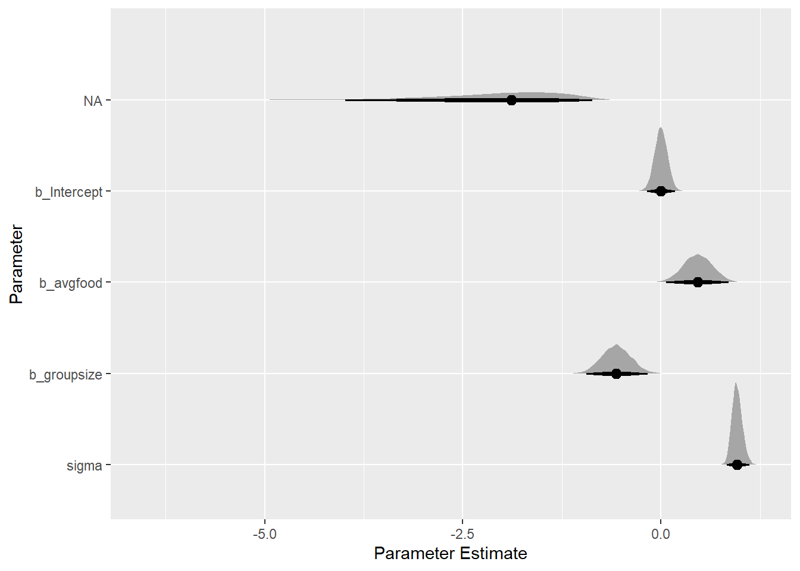
posterior_summary(b6H5) %>%
round(2) %>%
data.frame() %>%
rownames_to_column(var = "parameter") %>%
as_tibble()## # A tibble: 6 × 5
## parameter Estimate Est.Error Q2.5 Q97.5
## <chr> <dbl> <dbl> <dbl> <dbl>
## 1 b_Intercept 0 0.08 -0.16 0.16
## 2 b_avgfood 0.47 0.18 0.1 0.82
## 3 b_groupsize -0.56 0.18 -0.91 -0.2
## 4 sigma 0.96 0.07 0.85 1.1
## 5 lprior -2.01 0.74 -3.75 -0.92
## 6 lp__ -162. 1.41 -166. -160.6.6 おまけ ランダム効果を入れてみる
dat3 <- foxes %>%
as_tibble() %>%
mutate(across(2:5,standardize))
head(dat3)## # A tibble: 6 × 5
## group avgfood groupsize area weight
## <int> <dw_trnsf> <dw_trnsf> <dw_trnsf> <dw_trnsf>
## 1 1 -1.924829 -1.524089 -2.239596 0.4141347
## 2 1 -1.924829 -1.524089 -2.239596 -1.4270464
## 3 2 -1.118035 -1.524089 -1.205508 0.6759540
## 4 2 -1.118035 -1.524089 -1.205508 1.3009421
## 5 3 -1.319734 -1.524089 -1.130106 1.1151348
## 6 3 -1.319734 -1.524089 -1.130106 -1.0807692b6H5_2 <-
brm(data = dat3,
family = gaussian,
formula = weight ~ 1 + avgfood + groupsize + (1|group),
prior = c(prior(normal(0, 0.2),class=Intercept),
prior(normal(0, 0.5), class = b,),
prior(exponential(1), class = sigma)),
iter = 4000, warmup = 2000, chains = 4, cores = 4, seed = 1234,
backend = "cmdstanr",
file = "output/Chapter6/b6H5_2")
posterior_summary(b6H5_2) %>%
round(2) %>%
data.frame() %>%
rownames_to_column(var = "parameter") %>%
as_tibble()## # A tibble: 37 × 5
## parameter Estimate Est.Error Q2.5 Q97.5
## <chr> <dbl> <dbl> <dbl> <dbl>
## 1 b_Intercept 0 0.09 -0.17 0.18
## 2 b_avgfood 0.46 0.2 0.07 0.84
## 3 b_groupsize -0.55 0.2 -0.93 -0.16
## 4 sd_group__Intercept 0.18 0.12 0.01 0.44
## 5 sigma 0.95 0.07 0.83 1.09
## 6 r_group[1,Intercept] -0.04 0.2 -0.5 0.35
## 7 r_group[2,Intercept] 0.06 0.2 -0.29 0.53
## 8 r_group[3,Intercept] -0.02 0.2 -0.48 0.38
## 9 r_group[4,Intercept] -0.02 0.19 -0.46 0.38
## 10 r_group[5,Intercept] 0.08 0.2 -0.27 0.59
## # … with 27 more rows